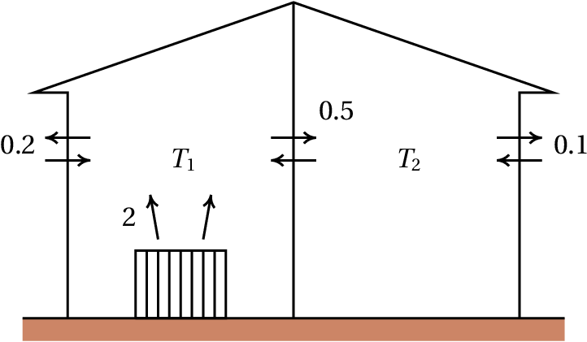

Introdução

Um metrónomo produz pulsos de duração regular que podem ser ajustados deslocando um peso na haste que oscila. Os osciladores jogam um papel muito importante na teoria dos sistemas dinâmicos, como casos típicos de sistemas lineares.
Jaime E. Villate. Dinâmica e Sistemas Dinâmicos,
Universidade do Porto, Portugal, 2019
Um metrónomo produz pulsos de duração regular que podem ser ajustados deslocando um peso na haste que oscila. Os osciladores jogam um papel muito importante na teoria dos sistemas dinâmicos, como casos típicos de sistemas lineares.
Um sistema dinâmico com duas variáveis de estado é definido por duas equações de evolução com a forma geral 7.2 introduzida no capítulo 7:
Diz-se que o sistema é linear quando as duas funções e são combinações lineares das variáveis de estado:
onde , , e são quatro constantes. As duas equações de evolução podem ser escritas de forma mais compacta usando matrizes:
Os pontos de equilíbrio determinam-se substituindo o lado esquerdo da equação 9.3 por uma matriz com zeros nas duas linhas, dando um sistema de equações lineares, homogéneo. Um sistema linear homogéneo tem sempre uma solução, chamada trivial, em que todas as variáveis são nulas; em alguns casos, quando o determinante da matriz do sistema é nulo, existem muitas mais soluções. Como tal, quando o determinante da matriz é diferente de zero, o sistema dinâmico tem um único ponto de equilíbrio: , localizado na origem do espaço de fase. Nos casos em que o determinante da matriz é nulo, as derivadas das duas variáveis de estado são a mesma função, multiplicada por uma constante, e o sistema pode reduzir-se a um sistema linear com uma única variável de estado e um único ponto de equilíbrio na origem.
Quando as equações de evolução são combinações lineares das variáveis de estado mais uma constante, o ponto de equilíbrio já não é a origem do espaço de fase, mas é possível obter um sistema linear por meio de uma substituição de variáveis, que corresponde a deslocar a origem para o ponto de equilíbrio, tal como se mostra no exemplo seguinte.
As equações de transferência de calor, que determinam as temperaturas e em duas divisões de uma casa, são as seguintes:
em que as temperaturas são medidas em graus Celsius e o tempo em horas. A temperatura exterior é 8 °C. Os termos e representam o calor que sai de cada divisão para o exterior, por unidade de tempo, divididos pelas capacidades caloríficas de cada divisão. O termo tem a ver com o calor que passa de uma divisão para a outra e o termo constante 2 é devido a que na primeira divisão há um aquecedor ligado que fornece uma quantidade constante de calor a cada hora. Determine as temperaturas das duas divisões no estado de equilíbrio e escreva o sistema de forma linear.
Resolução. Os lados direitos das duas equações diferenciais definem as componentes da velocidade de fase, no espaço de fase ( , ). Os pontos de equilíbrio, onde o estado do sistema permanece constante, são os pontos onde essas duas componentes são nulas. Usando comando o solve,
ou seja, no estado de equilíbrio as temperaturas das duas divisões são 15.06 °C e 13.88 °C.
Para tornar o sistema linear basta deslocar a origem de coordenadas para o ponto de equilíbrio. Isso consegue-se definindo duas novas variáveis:
e nesse sistema de variáveis as equações do sistema são (basta eliminar os termos constantes no sistema original):
A figura 9.1 mostra as nulclinas, onde cada uma das componentes da velocidade de fase do exemplo 9.1 é nula. Na nulclina de , a derivada é nula e, portanto, se o estado inicial fosse um ponto sobre essa reta, a temperatura permanecia constante e o estado evoluía na direção paralela ao eixo . Se o estado inicial estivesse na nulclina de , evoluía então na direção paralela ao eixo . O ponto de equilíbrio encontra-se na interseção das duas nulclinas. Na região entre as duas nulclinas, os vetores na figura mostram que a velocidade de fase tem de apontar na direção do ponto de equilíbrio e o estado deverá aproximar-se do ponto de equilíbrio; mas será que nas outras regiões o estado inicial também se aproxima do estado de equilíbrio? na próxima secção mostra-se um método geral para responder essa questão.
Quando as equações de evolução são obtidas a partir de uma única equação diferencial de segunda ordem, , o sistema dinâmico é linear se a função é uma combinação linear de e . Nesse caso, a forma matricial do sistema é
onde e são duas constantes.
No exemplo 9.1, se as temperaturas de cada divisão atingirem os valores de equilíbrio, permanecerão constantes. Mas será que as temperaturas chegam a atingir esses valores? Ou será que enquanto a temperatura de uma das divisões se aproxima do seu valor de equilíbrio a outra temperatura afasta-se do seu valor de equilíbrio? E se as temperaturas inciais estivessem muito próximas dos seus valores de equilíbrio, será que se aproximarão ainda mais, ou se afastarão desses valores de equilíbrio?
Nos sistemas analisados no capítulo 7, quando o estado inicial do sistema está próximo de um ponto de equilíbrio instável, o sistema pode terminar afastando-se até o infinito, ou afastar-se inicialmente regressando para o ponto inicial. Se o estado inicial estiver próximo de um ponto de equilíbrio estável o sistema oscila. No exemplo 9.1, se existissem ciclos no espaço de fase, existia a possibilidade de que as duas temperaturas flutuassem de forma periódica, sem chegar a se estabilizar.
A seguir introduz-se um método geral para analisar a estabilidade dos sistemas lineares, ou seja, o seu comportamento na vizinhança dos pontos de equilíbrio. A equação matricial 9.3 pode interpretar-se como a representação matricial da equação vetorial:
onde a posição e a velocidade do estado são vetores no espaço de fase e é um operador linear que atua sobre os vetores do espaço de fase produzindo outros vetores nesse espaço.

Se num instante a velocidade de fase e o vetor posição no espaço de fase, , estão na mesma direção, há duas possibilidades, tal como mostra a figura 9.2: se os dois vetores têm sentidos opostos, o estado aproxima-se da origem (ponto de equilíbrio) e se têm o mesmo sentido, o estado afasta-se da origem. A condição para que e tenham a mesma direção é:
onde é um número real. Se é positivo, o sistema afasta-se-á do ponto de equilíbrio e se é negativo, o sistema aproxima-se do ponto de equilíbrio. Substituindo a expressão anterior na equação 9.6, obtém-se:
Os vetores que verificam a condição 9.8 chamam-se vetores próprios do operador e os respetivos valores são os valores próprios do operador.
Encontre os valores e vetores próprios do sistema linear do exemplo 9.1.
Resolução. Como as equações de evolução já foram armazenadas nas variáveis eq1 e eq2, pode usar-se o comando coefmatrix para obter a matriz do sistema (equação 9.4):
que são as mesmas 4 constantes nas combinações lineares das equações 9.4. O comando eigenvectors do Maxima determina os valores e vetores próprios de uma matriz:
A primeira lista mostra os valores próprios, e . A segunda lista são as "multiplicidades" de cada valor próprio, que neste caso são ambas 1. As últimas duas listas definem as direções dos vetores próprios correspondentes aos dois valores próprios; quaisquer vetores na mesma direção de um desses dois vetores, também é vetor próprio.
Como existem dois valores próprios negativos, existem assim duas direções no plano de fase em que o estado do sistema aproxima-se do estado de equilíbrio na origem. Pode obter-se o retrato de fase do sistema por meio do comando plotdf:
A sintaxe A[i] usa-se para obter a linha da matriz e o ponto indica produto matricial. A figura 9.3 mostra o retrato de fase.

As direções dos dois vetores próprios (as duas retas) são traçadas introduzindo as coordenadas dos vetores próprios obtidos no resultado (%o7), no campo "Trajectory at" do menu de configuração e introduzindo as mesmas coordenadas com sinais opostos. Se o estado inicial não estiver sobre uma das direções dos vetores próprios, a curva de evolução aproxima-se rapidamente do vetor próprio com menor valor próprio em valor absoluto.
Observe-se que as duas nulclinas representadas na figura 9.1 encontram-se aos dois lados da reta com declive positivo, no retrato de fase 9.3 e cruzam-se na origem, onde foi deslocado o ponto de equilíbrio.
Se as temperaturas nos dois quartos forem iguais à temperatura exterior, , então os valores iniciais das variáveis e serão e . A curva de evolução no espaço de fase e a evolução das temperaturas em função do tempo podem ser traçadas com o comando seguinte:
O resultado mostra-se na figura 9.4. Os gráficos em função do tempo mostram que após 30 horas, as duas temperaturas atingem praticamente os valores de equilíbrio.

A forma geral de um sistema dinâmico linear, com qualquer número de variáveis, é:
em que é a posição do sistema no espaço de fase e é um operador linear. Num espaço de fase com duas variáveis de estado e , a representação matricial da equação 9.9 é a equação 9.3.
Se o determinante da matriz é diferente de zero, existe um único ponto de equilíbrio, na origem: . A existência de valores próprios da matriz implica existência de direções em que o estado aproxima-se ou afasta-se em linha reta do ponto de equilíbrio. Os valores próprios da matriz são os valores que verificam a equação 9.8. No espaço de fase com duas variáveis, essa equação conduz a:
Calculando o determinante, obtêm-se a seguinte equação quadrática, chamada equação caraterística:
onde é o traço da matriz e é o determinante. As duas raízes da equação caraterística são:
Se as raízes forem números complexos, significará que não existem vetores próprios no espaço de fase ( , ). Se existir uma única raiz real, existirá pelo menos um vetor próprio no espaço de fase e se existirem duas raízes reais diferentes, existirão dois vetores próprios linearmente independentes no espaço de fase.
Quando o determinante é negativo, a expressão dentro da raíz na equação 9.12 é positiva e
Isso implica que existem dois valores próprios reais, e , com sinais diferentes, um deles positivo e o outro negativo.
A esses dois valores próprios correspondem dois vetores próprios linearmente independentes, que definem duas direções no espaço de fase onde o sistema evolui ao longo de uma reta (ver figura 9.5). Na direção correspondente ao valor próprio negativo, o sinal negativo implica que o estado se aproxima da origem. Na direção associada ao valor próprio positivo, o sinal positivo implica que o estado se afasta da origem.
As outras curvas de evolução do sistema serão todas curvas que se aproximam da origem durante algum tempo, mas acabam sempre por se afastar até o infinito (figura 9.5). A denominação desse tipo de ponto de equilíbrio é ponto de sela. Trata-se de pontos de equilíbrio instável.
Observe-se que nos pontos de sela, apesar de existirem curvas de evolução que começam ou terminam nesse ponto, não podem existir órbitas homoclínicas porque essas curvas de evolução são retas que se estendem até infinito. As órbitas homoclínicas só aparecem nos sistemas não lineares. As órbitas heteroclínicas também não aparecem nos sistemas lineares porque precisam, pelo menos, de dois pontos de equilíbrio, mas os sistemas lineares têm um único ponto de equilíbrio.
Quando o determinante é positivo mas menor que , existem duas soluções reais da equação 9.12, ambas com o mesmo sinal de .
Se os dois valores próprios são negativos, existem duas direções no espaço de fase em que o estado se aproxima do ponto de equilíbrio (lado esquerdo da figura 9.6); devido à continuidade das curvas de evolução do sistema, qualquer outra curva de evolução será uma curva que se aproxima do ponto de equilíbrio. A denominação do ponto de equilíbrio é nó estável, ou nó atrativo.
Se os dois valores próprios são positivos, existem duas direções no espaço de fase em que o estado se afasta do ponto de equilíbrio. Qualquer que seja o estado inicial, o sistema sempre se afasta do ponto de equilíbrio (lado direito da figura 9.6) e o ponto chama-se nó instável, ou nó repulsivo.
Quando o determinante é maior que , as duas soluções da equação 9.12 são números complexos . Isso quer dizer que não existem curvas de evolução que sejam retas.
O sinal da parte real das soluções complexas da equação 9.12 determina se as curvas de evolução se aproximam ou afastam do ponto de equilíbrio. Se a parte real das raízes é negativa (matriz com traço negativo), as curvas de evolução do sistema são espirais que se aproximam do ponto de equilíbrio (lado esquerdo da figura 9.7) e o ponto de equilíbrio é designado de foco estável, ou foco atrativo.

Se a parte real das raízes é positiva (matriz com traço positivo), as curvas de evolução do sistema afastam-se do ponto de equilíbrio, formando espirais (lado direito da figura 9.7) e o ponto de equilíbrio é designado de foco instável, ou foco repulsivo.
Se o traço da matriz é nulo, as soluções da equação 9.12 são dois números imaginários puros, com a mesma parte imaginária mas com sinais opostos. Nesse caso todas as curvas de evolução do sistema são ciclos e o ponto de equilíbrio, estável, chama-se centro.
A figura 9.8 apresenta um sumário dos diferentes tipos de ponto de equilíbrio, em função do traço e o determinante da matriz do sistema.

Quando o determinante é exatamente igual (pontos na parábola na figura 9.8), existe unicamente um valor próprio real.
Essa situação conduz a dois tipos diferentes de ponto de equilíbrio. Se a matriz é diagonal, os elementos na diagonal são ambos iguais ao valor próprio e qualquer vetor do espaço de fase é vetor próprio da matriz. Isso implica que todas as curvas de evolução do sistema são retas que passam pela origem, afastando-se, se o valor próprio é positivo (lado esquerdo na figura 9.9) ou aproximando-se, se o valor próprio é negativo. O ponto de equilíbrio denomina-se nó próprio, estável ou instável, dependendo do sinal do valor próprio.

Na segunda situação possível, quando a matriz não é diagonal, existe uma única reta no retrato de fase e o ponto de equilíbrio chama-se nó impróprio. Existem unicamente duas curvas de evolução retas, ambas na mesma direção; todas as outras curvas de evolução acumulam-se nessa direção. Se o valor próprio é negativo, o nó impróprio é estável (lado direito na figura 9.9) e se o valor próprio é positivo o ponto de equilíbrio é um nó impróprio instável.
Uma forma conveniente de identificar o tipo de equilíbrio num sistema linear é a seguinte: se a matriz é diagonal, os elementos na diagonal são os valores próprios. Se os dois valores próprios na diagonal são iguais, o ponto é um nó próprio, instável se o valor próprio é positivo ou estável se o valor próprio é negativo; nesse caso qualquer vetor no plano de fase é vetor próprio.
Se a matriz não é diagonal, escreve-se a equação caraterística 9.11 e encontram-se os valores próprios. Em função dos valores próprios obtidos, usa-se a tabela 9.1 para classificar o ponto de equilíbrio.
| Valores próprios λ | Tipo de ponto | Estabilidade |
|---|---|---|
| 2 reais; sinais opostos | ponto de sela | instável |
| 2 reais, positivos | nó repulsivo | instável |
| 2 reais, negativos | nó atrativo | estável |
| 2 complexos; parte real positiva | foco repulsivo | instável |
| 2 complexos; parte real negativa | foco atrativo | estável |
| 2 imaginários | centro | estável |
| 1 real, positivo | nó impróprio repulsivo | instável |
| 1 real, negativo | nó impróprio atrativo | estável |
Nos sistemas lineares e conservativos, a condição 7.14 de que a divergência é nula implica, a partir das equações 9.2,
ou seja, o traço da matriz do sistema, , é nulo e, de acordo com o gráfico 9.8, o ponto de equilíbrio na origem pode ser unicamente um centro, se for estável, ou um ponto de sela, se for instável. Os sistemas lineares conservativos nunca têm nem nós nem focos.
Nos sistemas mecânicos com um único grau de liberdade , a equação de movimento conduz a um sistema dinâmico linear quando é uma combinação linear de e :
onde e são constantes. O termo é a componente tangencial da força conservativa, dividida pela massa e o termo é a componente tangencial da força não conservativa, dividida por .
Um oscilador invertido é um sistema com equação de movimento , onde é uma constante positiva. Analise a estabilidade do sistema e represente o retrato de fase em unidades em que .
Resolução. As variáveis de estado são e e a forma matricial das equações de evolução (equação 9.5) é:
O traço da matriz é nulo e o seu determinante é igual a , que é negativo. Assim sendo, a equação caraterística é e os valores próprios são e . De acordo com a tabela 9.1 o ponto de equilíbrio na origem é um ponto de sela (instável).
O retrato de fase, no caso , constrói-se com o comando:
A figura 9.10 mostra o gráfico obtido, após traçar manualmente algumas trajetórias.

Analise a estabilidade e as curvas de evolução de um oscilador harmónico simples.
Resolução. O oscilador harmónico simples foi estudado na secção 6.4, onde se mostra que a equação de movimento é (equação 6.31):
onde é uma constante positiva.
Essa equação de movimento conduz ao sistema dinâmico:
O traço da matriz é zero e o determinante é , que é positivo. Consequentemente, os valores próprios são dois números imaginários puros:
e o ponto de equilíbrio é um centro.

Se o oscilador estiver inicialmente no estado de equilíbrio, , permanecerá em repouso; caso contrário, a curva de evolução será uma elipse (figura 9.11), que corresponde a um movimento harmónico simples com frequência angular . Isto é, sempre que os valores próprios de um sistema linear de duas variáveis sejam imaginários puros, o sistema é um oscilador harmónico simples, com frequência angular igual ao módulo dos valores próprios, |. No caso de um corpo de massa ligado a uma mola com constante elástica , a constante é e a frequência angular é .
O oscilador harmónico simples do exemplo 9.4 é um sistema idealizado, pois na prática existem forças dissipativas. Um exemplo é o sistema de amortecimento de um automóvel (figura 9.12). Cada roda está ligada à carroçaria por meio de uma mola elástica; no interior de cada mola há um cilindro (amortecedor) com um pistão que se desloca dentro de óleo.

Se for a altura do ponto da carroçaria onde está apoiado o amortecedor, medida desde a posição de equilíbrio , a força vertical resultante sobre a carroçaria é:
em que e são constantes positivas; é a constante elástica da mola e depende do tamanho do pistão e do coeficiente de viscosidade do óleo dentro do amortecedor.
Essa força conduz ao seguinte sistema linear:
onde é a frequência angular, , e é igual a .
O traço da matriz do sistema é , negativo, e o determinante é , positivo. Assim sendo, os valores próprios são ou números reais negativos ou números complexos com parte real negativa. Isso implica que o sistema é sempre estável, acabando por ficar em repouso em e .
No entanto, a forma como o sistema se aproxima do ponto de equilíbrio dependerá do tipo de ponto. Diz-se que o amortecimento é fraco quando,
e nesse caso os valores próprios são complexos; a matriz do sistema está na região dos focos estáveis na figura 9.8. A evolução de em função do tempo é um movimento oscilatório com amplitude decrescente, como mostra a figura 9.13.

No caso em que:
diz-se que há amortecimento crítico. Nesse caso existe um único valor próprio real. Como a matriz não é diagonal, o ponto de equilíbrio é um nó impróprio estável. A evolução de em função de é apresentada na figura 9.13.
Finalmente, no caso de amortecimento forte,
existem dois valores próprios diferentes e negativos. O ponto de equilíbrio é um nó estável e aproxima-se mais rapidamente do ponto de equilíbrio (figura 9.13).
O sistema de suspensão deve garantir que o sistema se aproxime diretamente do equilíbrio sem passar várias vezes por esse ponto, o que tornava o automóvel muito inseguro. Como tal, o amortecimento deve ser suficientemente forte para que o ponto de equilíbrio seja um nó.
Com o uso, a sujidade e as impurezas no óleo dentro dos amortecedores do automóvel fazem com que o coeficiente de viscosidade diminua; há também perdas de óleo. Esses fatores reduzem o valor da constante por baixo do valor crítico. Se, empurrando a carroçaria do automóvel para baixo, o automóvel oscila ligeiramente, está na altura de substituir os amortecedores.
(Para conferir a sua resposta, clique nela.)
 Sabendo que a altura máxima atingida pela bola é
m e que a
deformação máxima quando a bola bate no chão é
cm, determine:
Sabendo que a altura máxima atingida pela bola é
m e que a
deformação máxima quando a bola bate no chão é
cm, determine:


Perguntas: 1. E. 2. E. 3. B. 4. B. 5. A.
Problemas


A cada dimensão associa-se uma variável de estado (grau de liberdade). Como tal, o número de variáveis de estado deverá ser maior do que 2.
(clique para continuar)
O número de dimensões do espaço de fase deverá ser par, porque por cada variável de posição existe a respetiva velocidade.
(clique para continuar)
A cada dimensão associam-se duas variáveis de estado (grau de liberdade e respetiva velocidade).
(clique para continuar)
A cada dimensão associam-se duas variáveis de estado (grau de liberdade e respetiva velocidade).
(clique para continuar)
O módulo dos valores próprios (4) é igual à frequência angular do oscilador. O período obtém-se a partir dessa frequência angular.
(clique para continuar)
O módulo dos valores próprios (4) é igual à frequência angular do oscilador. O período obtém-se a partir dessa frequência angular.
(clique para continuar)
O módulo dos valores próprios (4) é igual à frequência angular do oscilador. O período obtém-se a partir dessa frequência angular.
(clique para continuar)
O módulo dos valores próprios (4) é igual à frequência angular do oscilador. O período obtém-se a partir dessa frequência angular.
(clique para continuar)
O módulo dos valores próprios (4) é igual à frequência angular do oscilador. O período obtém-se a partir dessa frequência angular.
(clique para continuar)
Para que o sistema seja linear, a expressão de deverá ser uma combinação linear das duas variáveis de estado, e .
(clique para continuar)
(clique para continuar)
Para que o sistema seja linear, a expressão de deverá ser uma combinação linear das duas variáveis de estado, e .
(clique para continuar)
Para que o sistema seja linear, a expressão de deverá ser uma combinação linear das duas variáveis de estado, e .
(clique para continuar)
Para que o sistema seja linear, a expressão de deverá ser uma combinação linear das duas variáveis de estado, e .
(clique para continuar)
Como aparece na equação diferencial, também deveria fazer parte do espaço de fase.
(clique para continuar)
Esta equação diferencial, escrita como sistema de duas equações de primeira ordem é: , , que é um sistema dinâmico com espaço de fase ( , ), ou seja, ( , ).
(clique para continuar)
Esta equação diferencial é equivalente a , que é unicamente uma equação de evolução, com uma única variável de estado: . Como tal o espaço de fase desta equação é o eixo dos .
(clique para continuar)
Como aparece na equação diferencial, também deveria fazer parte do espaço de fase.
(clique para continuar)
Como aparece na equação diferencial, também deveria fazer parte do espaço de fase.
(clique para continuar)
O traço, 4, é igual à soma dos dois valores próprios e o determinante, 3, é igual ao produto deles. Como tal, os dois valores próprios são 1 e 3, que correspondem a um nó repulsivo ou instável.
(clique para continuar)
O traço, 4, é igual à soma dos dois valores próprios e o determinante, 3, é igual ao produto deles. Os dois números que somados dão 4 e multiplicados dão 3, não podem ser negativos. Como tal, o ponto de equilíbrio não pode ser estável (atrativo).
(clique para continuar)
O traço, 4, é igual à soma dos dois valores próprios e o determinante, 3, é igual ao produto deles. Os dois números que somados dão 4 e multiplicados dão 3, têm ambos o mesmo sinal. Como tal, o ponto de equilíbrio não pode ser ponto de sela.
(clique para continuar)
O traço, 4, é igual à soma dos dois valores próprios e o determinante, 3, é igual ao produto deles. Os dois números que somados dão 4 e multiplicados dão 3, são ambos reais. Como tal, o ponto de equilíbrio não pode ser foco.
(clique para continuar)
O traço, 4, é igual à soma dos dois valores próprios e o determinante, 3, é igual ao produto deles. Os dois números que somados dão 4 e multiplicados dão 3, não podem ser negativos. Como tal, o ponto de equilíbrio não pode ser estável (atrativo).
(clique para continuar)
O número de dimensões do espaço de fase deverá ser par, porque por cada variável de posição existe a respetiva velocidade.
(clique para continuar)